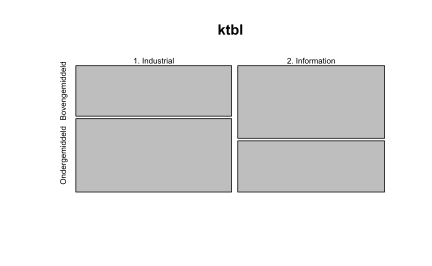

# Data
url <- "https://raw.githubusercontent.com/lgellis/STEM/master/DATA-ART-1/Data/FinalData.csv"
# download.file(url, file.path("data", "FinalData.csv"))
df <- read_csv("data/FinalData.csv", col_names = TRUE)11 Exploratieve Data Analyse (EDA)
Exploratieve data analyse (EDA) als aanpak werd al in 1977 beschreven door John W. Tukey. Het is een aanpak gebaseerd op eigen waarnemingen die aan het einde van het proces worden bevestigd met statistische methoden. Het is een aanpak om data te onderzoeken op inhoudelijke kenmerken, samenhang en voorspellende (of verklarende) eigenschappen.
Het doel van EDA is het kiezen van het eenvoudigste data model met de minste aannames, laagste aantal variabelen en het hoogste verklarende (of voorspellende) vermogen met de laagst mogelijke negatieve effecten binnen machine learning algoritmes zoals bias, hoge variatie of ‘overfitting’.
Veel methoden zijn grafisch. Door gebruik te maken van data visualisaties worden verwachte of juist onverwachte eigenschappen intuïtief zichtbaar. De grafische methoden worden aangevuld met statische technieken om o.a. patronen of verbanden te herkennen en te bevestigen.
Het onderzoek tijdens de exploratieve data analyse omvat o.a.:
- Een samenvatting van de data met behulp van beschrijvende statistiek. Dit is vaak de eerste stap en geeft een globaal beeld van het karakter van de data.
- numerieke variabelen: centrum, variantie, vorm
- kwalitatieve variabelen: frequentietabellen, vorm
- Herkennen van fouten in de data, denk aan ontbrekende waardes of variabelen met een uitzonderlijk lage variatie.
- Onderzoek naar interessante patronen in de data, zoals trends, seizoensinvloeden, groeperingen (clusters) en afwijkingen hierop.
- Testen van de aannames die zijn gedaan over het voorspellende en/of verklarende vermogen van de data.
- Onderzoeken van de samenhang tussen de variabelen onderling en het gewenste resultaat.
- Identificeren van variabelen die de meeste invloed hebben op het gewenste resultaat.
- Noodzakelijke bewerkingen op de data voordat deze als grondstof gebruik kan worden voor machine learning. Aandachtspunten zijn o.a. ontbrekende waardes, normaliseren, uitschieters, lage variatie en het reduceren van dimensionaliteit.
Veel gebruikte grafieksoorten zijn:
- Histogram, om de spreiding in beeld te brengen. Je combineert deze met een dichtheidscurve om de aanname van normaliteit te onderzoeken. Als er sprake is van asymmetrie, scheefheid (skewness) dan is dat aanleiding voor verder onderzoek. Een andere grafiek voor het toetsen op normaliteit is een Q-Q plot.
- Boxplot, ook om de spreiding te onderzoeken, alsmede het ontdekken van uitschieters (outliers).
- Scatterplot met trendlijn, om de samenhang tussen variabelen te onderzoeken.
Het onderzoeken van een nieuwe gegevensverzameling kan een spannende zaak zijn. Zaken die je wilt weten zijn welke variabelen je hebt en wat de structuur ervan is, hoeveel records er zijn, hoeveel ontbrekende waarden er zijn, welke relaties er tussen de variabelen zijn, enz.
11.1 STEAM project
Bron: STEAM project
HEAD en TAIL
head(df)
#> # A tibble: 6 × 17
#> ID Gender Grade Horoscope Subject IntExt OptPest Scree…¹ Sleep PhysA…²
#> <dbl> <chr> <dbl> <chr> <chr> <chr> <chr> <dbl> <dbl> <dbl>
#> 1 1 male 4 Scorpio Math Extravert Optimist 1 7 10
#> 2 2 female 4 Capricorn Gym Extravert Optimist 1 8 5
#> 3 3 male 4 Taurus Math Introvert Optimist 4 9 22
#> 4 4 male 4 Aquarius Math Don't Know Don't K… 3 9 9
#> 5 5 male 4 Scorpio Gym Don't Know Don't K… 1 9 10
#> 6 6 male 4 Pisces Gym Extravert Optimist 2 9 20
#> # … with 7 more variables: HrsHomework <dbl>, SpendTime1 <chr>,
#> # SpendTime2 <chr>, Self1 <chr>, Self2 <chr>, Career <chr>, Superpower <chr>,
#> # and abbreviated variable names ¹ScreenTime, ²PhysActive
tail(df)
#> # A tibble: 6 × 17
#> ID Gender Grade Horoscope Subject IntExt OptPest Scree…¹ Sleep PhysA…²
#> <dbl> <chr> <dbl> <chr> <chr> <chr> <chr> <dbl> <dbl> <dbl>
#> 1 180 male 6 Capricorn Math Extravert Optimi… 2 9 10
#> 2 181 female 6 Aries Gym Extravert Pessim… 5 6 7
#> 3 182 male 6 Sagittarius Math Extravert Optimi… 1 11 13
#> 4 183 male 6 Cancer Gym Extravert Optimi… 3 9 11
#> 5 184 female 6 Aries Gym Extravert Optimi… 2 9 7
#> 6 185 female 6 Gemini Art Introvert Pessim… 5 9 7
#> # … with 7 more variables: HrsHomework <dbl>, SpendTime1 <chr>,
#> # SpendTime2 <chr>, Self1 <chr>, Self2 <chr>, Career <chr>, Superpower <chr>,
#> # and abbreviated variable names ¹ScreenTime, ²PhysActiveDIM
dim(df)
#> [1] 185 17GLIMPSE
Functie glimpse uit dplyr package toont alle variabelen en het type. Alsmede een voorbeeld van de inhoud. Erg handig voor een overzicht.
glimpse(df)
#> Rows: 185
#> Columns: 17
#> $ ID <dbl> 1, 2, 3, 4, 5, 6, 7, 8, 9, 10, 11, 12, 13, 14, 15, 16, 17,…
#> $ Gender <chr> "male", "female", "male", "male", "male", "male", "male", …
#> $ Grade <dbl> 4, 4, 4, 4, 4, 4, 3, 6, 6, 6, 4, 4, 4, 7, 8, 8, 8, 8, 8, 8…
#> $ Horoscope <chr> "Scorpio", "Capricorn", "Taurus", "Aquarius", "Scorpio", "…
#> $ Subject <chr> "Math", "Gym", "Math", "Math", "Gym", "Gym", "Art", "Math"…
#> $ IntExt <chr> "Extravert", "Extravert", "Introvert", "Don't Know", "Don'…
#> $ OptPest <chr> "Optimist", "Optimist", "Optimist", "Don't Know", "Don't K…
#> $ ScreenTime <dbl> 1, 1, 4, 3, 1, 2, 1, 4, 6, 3, 1, 1, 0, 5, 6, 5, 8, 4, 2, 3…
#> $ Sleep <dbl> 7, 8, 9, 9, 9, 9, 11, 9, 8, 9, 10, 10, 9, 8, 9, 7, 7, 8, 9…
#> $ PhysActive <dbl> 10, 5, 22, 9, 10, 20, 4, 12, 4, 12, 5, 5, 5, 14, 25, 6, 2,…
#> $ HrsHomework <dbl> 10, 0, 1, 1, 1, 2, 14, 21, 6, 3, 0, 0, 0, 4, 2, 3, 0, 0, 3…
#> $ SpendTime1 <chr> "baseball", "playing outside", "video games", "video games…
#> $ SpendTime2 <chr> "relaxing", "swimming", "soccer", "sports", "hanging out",…
#> $ Self1 <chr> "active", "kind", "active", "active", "intellegent", "funn…
#> $ Self2 <chr> "competitive", "active", "creative", "responsible", "stron…
#> $ Career <chr> "professional baseball player", "Teacher", "professional s…
#> $ Superpower <chr> "sonic speed", "power to grant wishes", "powerful kick", "…SUMMARY
Functie summary toon elke variabele, gegevenstype en wat andere kenmerken die vooral nuttig zijn voor numerieke variabelen.
SKIM
Functie skim uit skimr package is een goede aanvulling op summary. Toont naast numerieke kenmerken tevens ontbrekende waarden, kwartielinfo en een inline histogram.
skimr::skim(df)| Name | df |
| Number of rows | 185 |
| Number of columns | 17 |
| _______________________ | |
| Column type frequency: | |
| character | 11 |
| numeric | 6 |
| ________________________ | |
| Group variables | None |
Variable type: character
| skim_variable | n_missing | complete_rate | min | max | empty | n_unique | whitespace |
|---|---|---|---|---|---|---|---|
| Gender | 0 | 1.00 | 4 | 14 | 0 | 3 | 0 |
| Horoscope | 0 | 1.00 | 3 | 11 | 0 | 12 | 0 |
| Subject | 1 | 0.99 | 3 | 7 | 0 | 5 | 0 |
| IntExt | 0 | 1.00 | 9 | 10 | 0 | 3 | 0 |
| OptPest | 0 | 1.00 | 8 | 10 | 0 | 3 | 0 |
| SpendTime1 | 0 | 1.00 | 2 | 26 | 0 | 95 | 0 |
| SpendTime2 | 0 | 1.00 | 2 | 22 | 0 | 107 | 0 |
| Self1 | 2 | 0.99 | 3 | 16 | 0 | 103 | 0 |
| Self2 | 1 | 0.99 | 3 | 19 | 0 | 101 | 0 |
| Career | 2 | 0.99 | 3 | 28 | 0 | 106 | 0 |
| Superpower | 8 | 0.96 | 3 | 30 | 0 | 100 | 0 |
Variable type: numeric
| skim_variable | n_missing | complete_rate | mean | sd | p0 | p25 | p50 | p75 | p100 | hist |
|---|---|---|---|---|---|---|---|---|---|---|
| ID | 0 | 1.00 | 93.00 | 53.55 | 1 | 47 | 93 | 139 | 185 | ▇▇▇▇▇ |
| Grade | 0 | 1.00 | 5.74 | 1.39 | 3 | 5 | 6 | 7 | 8 | ▆▆▇▂▅ |
| ScreenTime | 0 | 1.00 | 3.00 | 2.32 | 0 | 1 | 3 | 4 | 18 | ▇▃▁▁▁ |
| Sleep | 0 | 1.00 | 8.64 | 1.54 | 2 | 8 | 9 | 10 | 12 | ▁▁▅▇▁ |
| PhysActive | 1 | 0.99 | 11.52 | 11.81 | 0 | 6 | 9 | 12 | 82 | ▇▁▁▁▁ |
| HrsHomework | 0 | 1.00 | 4.17 | 4.79 | 0 | 1 | 3 | 6 | 35 | ▇▁▁▁▁ |
CREATE_REPORT in DataExplorer
Deze mooie functie maakt een volledig gegevensprofiel van het dataframe. En produceert een html-bestand met de basisstatistieken, structuur, ontbrekende gegevens, distributie-visualisaties, correlatiematrix en hoofdcomponentenanalyse voor het dataframe!
DataExplorer::create_report(df)11.2 ToothGrowth
ToothGrowth is een gegevensverzameling van een onzerzoek naar het effect van Vitamine C op de tandgroei van Guinese biggetjes. De verzameling bevat 60 waarnemingen van 3 variabelen:
len, lengte tandsupp, type toediening, OJ = Orange Juice, VC = Vitamine C in de vorm van ascorbinezuurdose, dosis in mg/dag
str(ToothGrowth)
#> 'data.frame': 60 obs. of 3 variables:
#> $ len : num 4.2 11.5 7.3 5.8 6.4 10 11.2 11.2 5.2 7 ...
#> $ supp: Factor w/ 2 levels "OJ","VC": 2 2 2 2 2 2 2 2 2 2 ...
#> $ dose: num 0.5 0.5 0.5 0.5 0.5 0.5 0.5 0.5 0.5 0.5 ...Kwalitatieve variabele
#Frequentietabel
table(ToothGrowth$supp)
#>
#> OJ VC
#> 30 30
#Proportionele frequenties
prop.table(table(ToothGrowth$supp))
#>
#> OJ VC
#> 0.5 0.5
#Procentuele frequenties
prop.table(table(ToothGrowth$supp))*100
#>
#> OJ VC
#> 50 50Numerieke variabele
#Gemiddelde
mean(ToothGrowth$len, na.rm = TRUE)
#> [1] 18.8
#Mediaan
median(ToothGrowth$len, na.rm = TRUE)
#> [1] 19.2
#Modus (hiervoor bestaat geen rechtstreekse functie)
which.max(table(ToothGrowth$len))
#> 26.4
#> 36
#Variantie
var(ToothGrowth$len)
#> [1] 58.5
#Standaarddeviatie
sd(ToothGrowth$len)
#> [1] 7.65Door naar de vorm van de gegevens te kijken probeer je een indruk te krijgen van de scheefheid (skewness) en pieken in de verdeling (kurtosis). Meestal worden hiervoor histogrammen, dichtheidsgrafieken en boxplots gebruikt.
#Histogram met dichtheidslijn
hist(ToothGrowth$len, col = "lightblue", probability = TRUE)
lines(density(ToothGrowth$len))Samenvatting van meerdere variabelen tegelijk
summary(ToothGrowth)
#> len supp dose
#> Min. : 4.2 OJ:30 Min. :0.50
#> 1st Qu.:13.1 VC:30 1st Qu.:0.50
#> Median :19.2 Median :1.00
#> Mean :18.8 Mean :1.17
#> 3rd Qu.:25.3 3rd Qu.:2.00
#> Max. :33.9 Max. :2.00De functie describe() uit package Hmisc geeft wat meer gedetailleerde informatie over de variabelen.
Hmisc::describe(ToothGrowth)
#> ToothGrowth
#>
#> 3 Variables 60 Observations
#> --------------------------------------------------------------------------------
#> len
#> n missing distinct Info Mean Gmd .05 .10
#> 60 0 43 0.999 18.81 8.839 6.37 8.11
#> .25 .50 .75 .90 .95
#> 13.07 19.25 25.27 27.30 29.57
#>
#> lowest : 4.2 5.2 5.8 6.4 7.0, highest: 29.4 29.5 30.9 32.5 33.9
#> --------------------------------------------------------------------------------
#> supp
#> n missing distinct
#> 60 0 2
#>
#> Value OJ VC
#> Frequency 30 30
#> Proportion 0.5 0.5
#> --------------------------------------------------------------------------------
#> dose
#> n missing distinct Info Mean Gmd
#> 60 0 3 0.889 1.167 0.678
#>
#> Value 0.5 1.0 2.0
#> Frequency 20 20 20
#> Proportion 0.333 0.333 0.333
#> --------------------------------------------------------------------------------En de functie describe uit packagepsych` geeft bijna alle hiervoor genoemde informatie. Een mooie functie
psych::describe(ToothGrowth)
#> vars n mean sd median trimmed mad min max range skew kurtosis se
#> len 1 60 18.81 7.65 19.2 18.95 9.04 4.2 33.9 29.7 -0.14 -1.04 0.99
#> supp* 2 60 1.50 0.50 1.5 1.50 0.74 1.0 2.0 1.0 0.00 -2.03 0.07
#> dose 3 60 1.17 0.63 1.0 1.15 0.74 0.5 2.0 1.5 0.37 -1.55 0.0811.3 Kruistabellen
Bron: Contingency Tables in R
Een veel voorkomende manier om categoriale gegevens weer te geven en te analyseren is met kruistabellen. Als voorbeeld wordt met de Wage dataset uit package ISLR gewerkt (zie Calibre boek “Introduction to Statistical Learning”, Gareth James e.a.). Deze bevat loon- en andere gegevens (totaal 11 variabelen) voor een groep van 3000 mannelijke arbeiders in de Mid-Atlantische regio. De variabelen zijn:
year: Jaar waarin de looninformatie werd geregistreerdage: Leeftijd van de werknemermarit1: Een factor met niveaus voor de burgerlijke staat:- Never married (Nooit getrouwd)
- Married (Getrouwd)
- Widowed (Weduwnaar)
- Divorced (Gescheiden)
- Separated (Gescheiden)
race: Een factor met niveaus voor ras:- White (Blank)
- Black (Zwar)
- Asian (Aziatisch)
- Other (Anders)
education: Een factor met niveaus voor het opleidingsniveau:- < HS Grad
- HS Grad
- SomeCollege
- College Grad
- Advanced Degree
region: Regio van het land (uitsluitend mid-atlantic)jobclass: Een factor met niveaus voor de soort baan:- Industrial (Industrieel)
- Information (Informatie)
health: Een factor met niveaus voor de gezondheidstoestand van de werknemer:< =Good (Goed)
=Very Good (Zeer goed)
health_ins: Een factor met niveaus die aangeeft of de werknemer een ziektekostenverzekering heeft:- Yes (Ja)
- No (Nee)
logwage: Natuurlijke logaritme van brutoloon werknemerwage: Brutoloon werknemer
11.3.1 Tweezijdige kruistabel
Wanneer je een kruistabel maakt van variabele \(X\) met \(m\) categorieén met variabele $Y$ met n categorieë n krijg je mxn mogelijke combinaties.
Als eerste oefening wordt een nieuwe variabele loon_cat gemaakt met twee waarden “Bovengemiddeld” en “Ondergemiddeld” respectievelijk aangevend of het loon boven of onder het gemiddelde zit.
salaris <- ISLR2::Wage
salaris$loon_cat <- as.factor(ifelse(salaris$wage > median(salaris$wage),
"Bovengemiddeld", "Ondergemiddeld"))Om te onderzoeken of er een relatie is tussen loon_cat en jobclass wordt een kruistabel gemaakt.
ktbl <- table(salaris$jobclass, salaris$loon_cat)
knitr::kable(ktbl)| Bovengemiddeld | Ondergemiddeld | |
|---|---|---|
| 1. Industrial | 629 | 915 |
| 2. Information | 854 | 602 |
Met de functie addmargins() kun je rij- en kolomtotalen toevoegen.
knitr::kable(addmargins(ktbl))| Bovengemiddeld | Ondergemiddeld | Sum | |
|---|---|---|---|
| 1. Industrial | 629 | 915 | 1544 |
| 2. Information | 854 | 602 | 1456 |
| Sum | 1483 | 1517 | 3000 |
Fracties in kruistabellen
In plaats van aantallen kun je ook fracties weergeven, zowel fracties van het overall totaal, als van het rijtotaal en kolomtaal.
# overall fractie
knitr::kable(prop.table(ktbl), digits = 4)| Bovengemiddeld | Ondergemiddeld | |
|---|---|---|
| 1. Industrial | 0.210 | 0.305 |
| 2. Information | 0.285 | 0.201 |
# rijtotaal fractie
knitr::kable(prop.table(ktbl, margin = 1), digits = 4)| Bovengemiddeld | Ondergemiddeld | |
|---|---|---|
| 1. Industrial | 0.407 | 0.593 |
| 2. Information | 0.587 | 0.413 |
# rijtotaal fractie
knitr::kable(prop.table(ktbl, margin = 2), digits = 4)| Bovengemiddeld | Ondergemiddeld | |
|---|---|---|
| 1. Industrial | 0.424 | 0.603 |
| 2. Information | 0.576 | 0.397 |
mosaic grafiek
De meest geschikte manier om de kruistabellen grafisch weer te geven, zijn mosaic grafieken. Dat kan met de standaard in R aanwezige functie mosaicplot().
mosaicplot(ktbl)
Uit deze grafiek kun je gemakkelijk zien dat in de sector Industrial het percentage mensen dat onder het gemiddelde zit, hoger is in vergelijking met degenen die in de sector Information werken.
Chi-kwadraat toets
chisq.test(ktbl)
#>
#> Pearson's Chi-squared test with Yates' continuity correction
#>
#> data: ktbl
#> X-squared = 96, df = 1, p-value <2e-16Zoals je kunt zien is de p-waarde minder dan 5%, dus kun je de nulhypothese afwijzen dat de jobclass onafhankelijk is van het gemiddelde loon.
11.4 Diamonds
Korte inspectie data
head(diamonds)
#> # A tibble: 6 × 10
#> carat cut color clarity depth table price x y z
#> <dbl> <ord> <ord> <ord> <dbl> <dbl> <int> <dbl> <dbl> <dbl>
#> 1 0.23 Ideal E SI2 61.5 55 326 3.95 3.98 2.43
#> 2 0.21 Premium E SI1 59.8 61 326 3.89 3.84 2.31
#> 3 0.23 Good E VS1 56.9 65 327 4.05 4.07 2.31
#> 4 0.29 Premium I VS2 62.4 58 334 4.2 4.23 2.63
#> 5 0.31 Good J SI2 63.3 58 335 4.34 4.35 2.75
#> 6 0.24 Very Good J VVS2 62.8 57 336 3.94 3.96 2.48
tail(diamonds)
#> # A tibble: 6 × 10
#> carat cut color clarity depth table price x y z
#> <dbl> <ord> <ord> <ord> <dbl> <dbl> <int> <dbl> <dbl> <dbl>
#> 1 0.72 Premium D SI1 62.7 59 2757 5.69 5.73 3.58
#> 2 0.72 Ideal D SI1 60.8 57 2757 5.75 5.76 3.5
#> 3 0.72 Good D SI1 63.1 55 2757 5.69 5.75 3.61
#> 4 0.7 Very Good D SI1 62.8 60 2757 5.66 5.68 3.56
#> 5 0.86 Premium H SI2 61 58 2757 6.15 6.12 3.74
#> 6 0.75 Ideal D SI2 62.2 55 2757 5.83 5.87 3.64Structuur data
str(diamonds)
#> tibble [53,940 × 10] (S3: tbl_df/tbl/data.frame)
#> $ carat : num [1:53940] 0.23 0.21 0.23 0.29 0.31 0.24 0.24 0.26 0.22 0.23 ...
#> $ cut : Ord.factor w/ 5 levels "Fair"<"Good"<..: 5 4 2 4 2 3 3 3 1 3 ...
#> $ color : Ord.factor w/ 7 levels "D"<"E"<"F"<"G"<..: 2 2 2 6 7 7 6 5 2 5 ...
#> $ clarity: Ord.factor w/ 8 levels "I1"<"SI2"<"SI1"<..: 2 3 5 4 2 6 7 3 4 5 ...
#> $ depth : num [1:53940] 61.5 59.8 56.9 62.4 63.3 62.8 62.3 61.9 65.1 59.4 ...
#> $ table : num [1:53940] 55 61 65 58 58 57 57 55 61 61 ...
#> $ price : int [1:53940] 326 326 327 334 335 336 336 337 337 338 ...
#> $ x : num [1:53940] 3.95 3.89 4.05 4.2 4.34 3.94 3.95 4.07 3.87 4 ...
#> $ y : num [1:53940] 3.98 3.84 4.07 4.23 4.35 3.96 3.98 4.11 3.78 4.05 ...
#> $ z : num [1:53940] 2.43 2.31 2.31 2.63 2.75 2.48 2.47 2.53 2.49 2.39 ...1 variabele
Samenvatting
summary(diamonds$price)
#> Min. 1st Qu. Median Mean 3rd Qu. Max.
#> 326 950 2401 3933 5324 18823Boxplot
boxplot(diamonds$price, col = 'lightblue', xlab = 'Aantal', ylab = 'Price', main = 'Boxplot')Log transformatie voor ondersteuning normalisatie data.
boxplot(log(diamonds$price), col = 'lightblue', xlab = 'Aantal', ylab = 'Price', main = 'Boxplot')Histogram
hist(diamonds$price, breaks = 10, col = 'lightblue', xlab = 'Price', main = 'Histogram van Price')- Het is duidelijk dat meer dan 25.000 diamanten ongeveer $2000 zullen kosten.
- Er zijn 3000-5000 diamanten waarvan de prijs boven de $10000 ligt.
- Distributie is rechts scheef. Dit wijst op de aanwezigheid van uitbijters aan. Onderzoek deze uitbijters.
Staafdiagram
plot(diamonds$cut, col = 'lightblue', xlab="cut", main="Staafdiagram")Meerdere variabelen
Boxplots
boxplot(carat ~ cut, data = diamonds, col = "lightblue", main = 'Boxplots')- De beste kwaliteit diamanten kregen het gewicht binnen 2,5
- Diamanten van lage kwaliteitzijn groter in gewicht / maat.
Histogrammen
par(mfrow = c(2, 1), mar = c(4, 4, 2, 1))
hist(subset(diamonds, cut == 'Fair')$price, col = 'lightblue', xlab = 'Price', ylab = 'Aantal', main = 'Histogram van Cut(Fair) vs Price verdeling')
hist(subset(diamonds, cut == 'Ideal')$price, col = 'lightblue', xlab = 'Price', ylab = 'Aantal', main = 'Histogram van Cut(Ideal) vs Price verdeling')- Diamanten van goede kwaliteit minder kosten. Het is een vreemd patroon, maar is waar voor deze data.
- De diamanten van lage kwaliteit kosten meer.
Scatter plots
par(mfrow = c(1, 2), mar = c(5, 4, 2, 1))
with(subset(diamonds, cut == "Fair"), plot(carat, price, main = "Fair", col = 'lightblue'))
with(subset(diamonds, cut == "Ideal"), plot(carat, price, main = "Ideal", col = 'lightblue'))
- De prijs van de diamanten is afhankelijk van het gewicht/de grootte van de diamanten.
- De kwaliteit van diamanten heeft een kleinere bijdrage in vergelijking met het gewicht van diamanten.